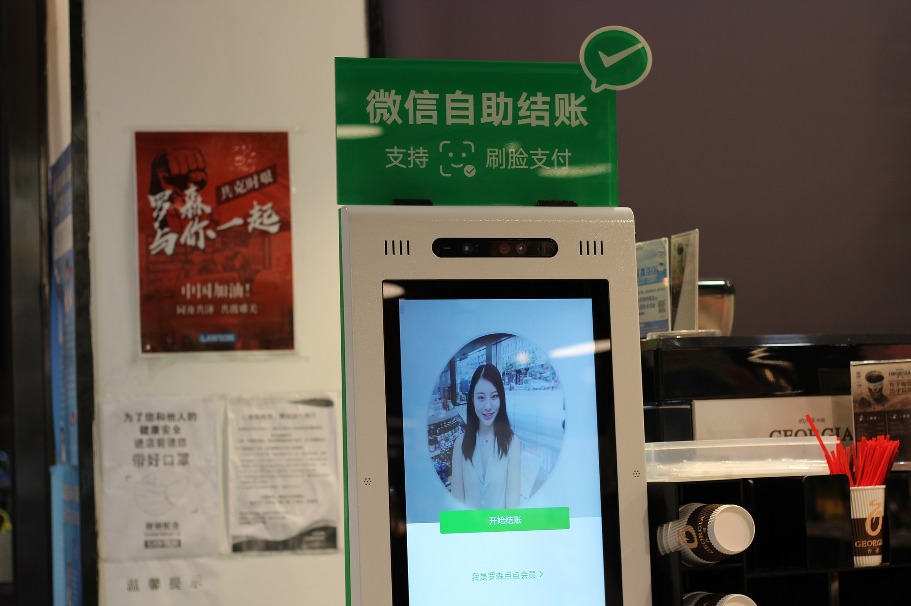

얼굴로 편의점 출입·결제한다…CU, 최첨단 무인점포 개점
기사입력 2021.01.28 오후 3:01

편의점 CU는 인천시 송도 삼성바이오에피스 사옥에 무인 스마트 편의점 '테크 프렌들리 CU' 1호점을 열었다고 28일 밝혔다.
결제 수단과 멤버십 서비스, 제휴 할인 적용 여부, 월별 행사 품목 등의 정보는 클라우드 POS에 실시간으로 업데이트 된다.
결제는 소비자가 사전에 등록한 CU 셀프 결제 앱(운영프로그램)인 'CU 바이셀프'를 통해 점포 게이트를 통과함과 동시에 자동으로 이뤄진다.
매장 입구에는 안면 등록 키오스크가 설치돼있어 안면 정보와 'CU 바이셀프' 정보를 한 번 등록하면 이후 방문 때는 휴대전화가 없어도 얼굴 스캔만으로 매장을 출입하고 상품도 결제할 수 있다.
편의점 CU는 인천시 송도 삼성바이오에피스 사옥에 무인 스마트 편의점 '테크 프렌들리 CU' 1호점을 열었다고 28일 밝혔다.
결제 수단과 멤버십 서비스, 제휴 할인 적용 여부, 월별 행사 품목 등의 정보는 클라우드 POS에 실시간으로 업데이트 된다.
결제는 소비자가 사전에 등록한 CU 셀프 결제 앱(운영프로그램)인 'CU 바이셀프'를 통해 점포 게이트를 통과함과 동시에 자동으로 이뤄진다.
매장 입구에는 안면 등록 키오스크가 설치돼있어 안면 정보와 'CU 바이셀프' 정보를 한 번 등록하면 이후 방문 때는 휴대전화가 없어도 얼굴 스캔만으로 매장을 출입하고 상품도 결제할 수 있다.
출처 : 이미경 기자, "얼굴로 편의점 출입·결제한다…CU, 최첨단 무인점포 개점", 한국경제, 2021.01.28, https://www.hankyung.com/economy/article/202101283185g